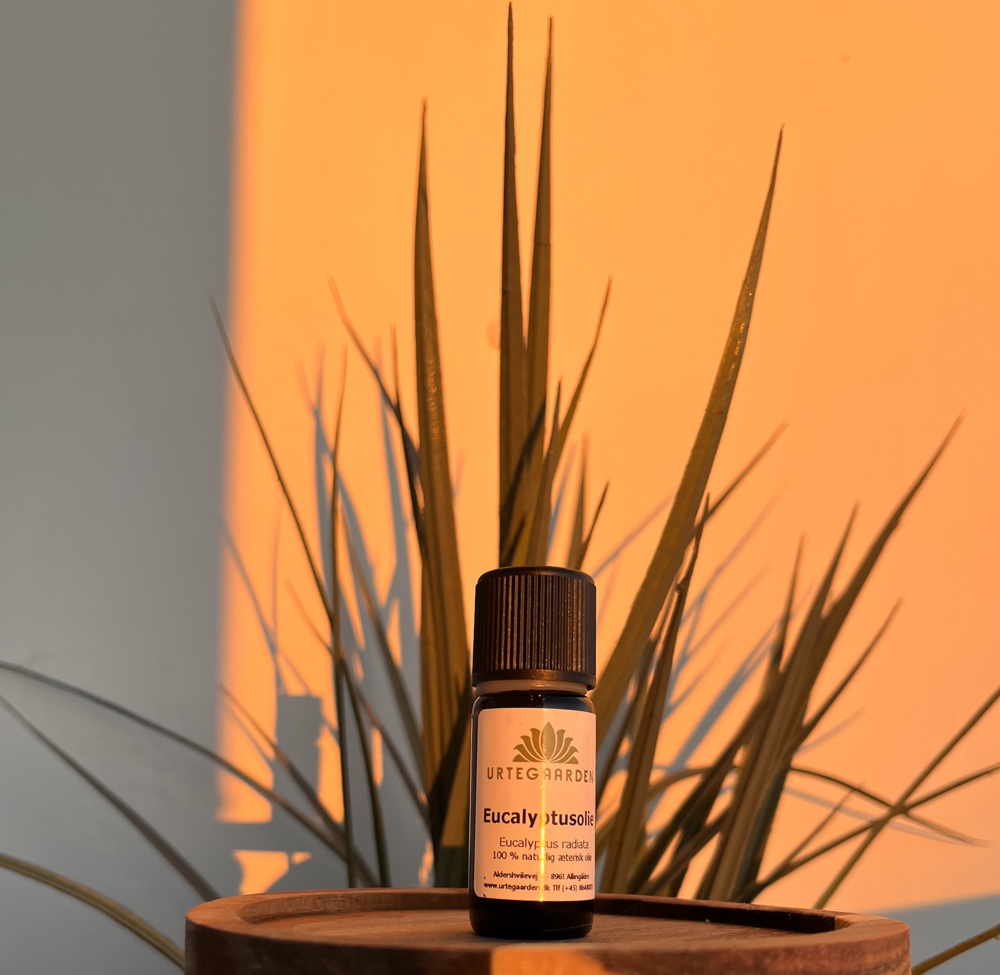
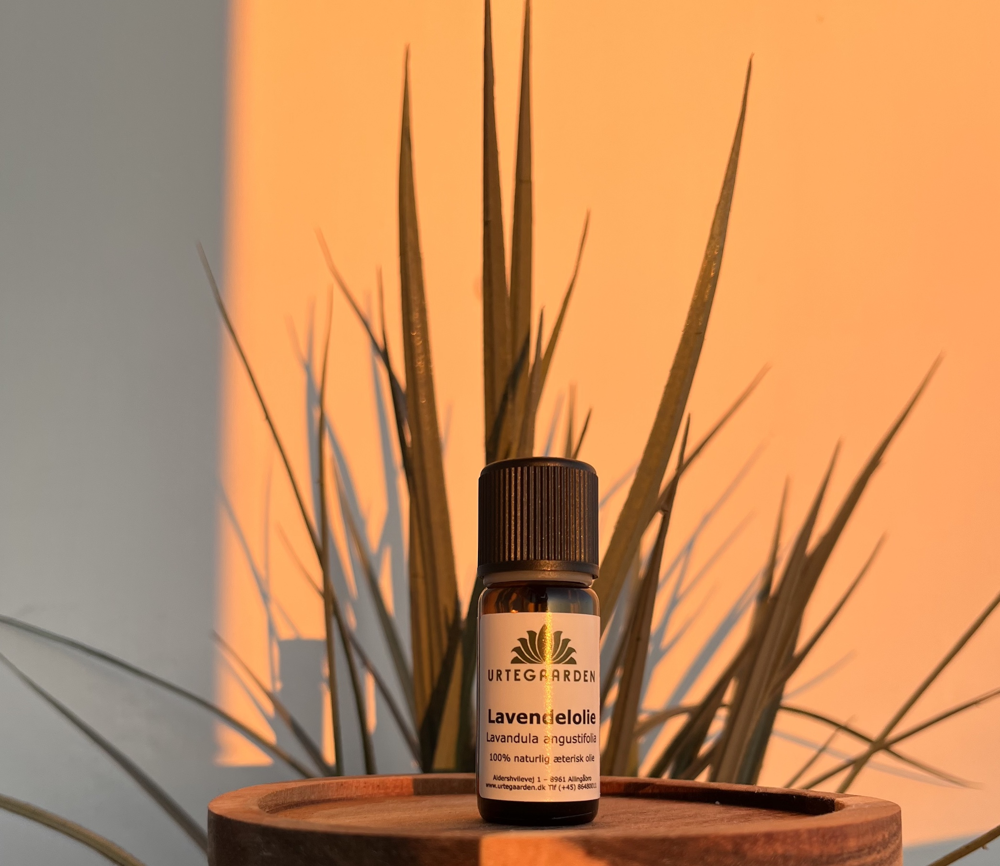
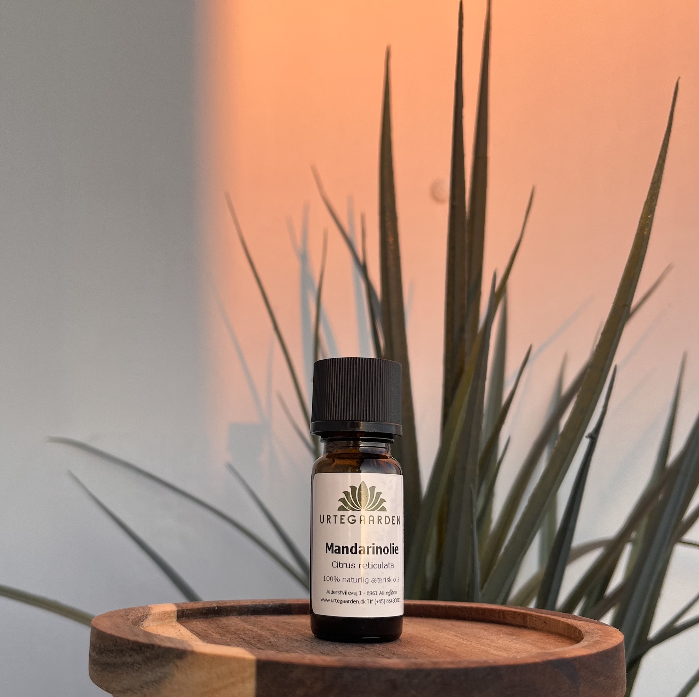
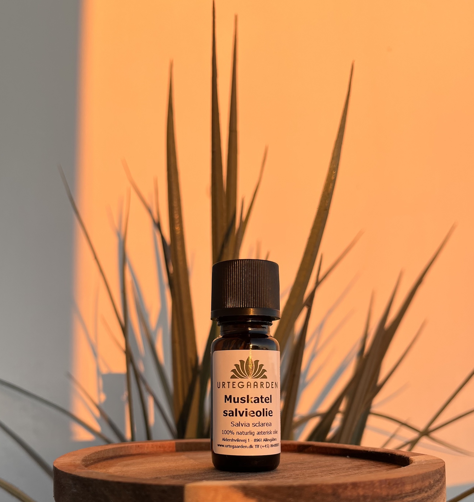
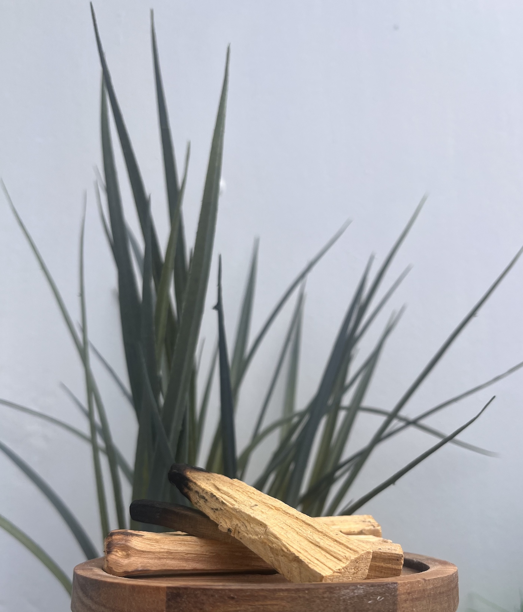
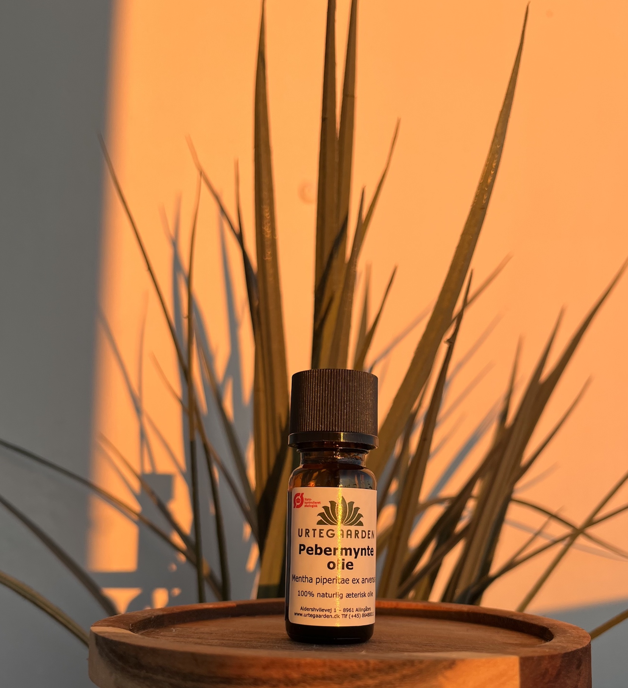

Duftenes egenskaber
Magi til lugtesansen
Eukalyptus
Duften hjælper ofte på at åbne ens næse, samt lungerne hvilket kan gøre, at du føler en mere lethed med din vejrtrækning.
Den æteriske olie siges at have healende egenskaber.
Lavendel
Duften er kendt for sin afslappende effekt, samt evne til at reducere stress.
Derudover er lavendel også kendt for at forbedre søvnen.
Den æteriske olie siges at have healende egenskaber.
Mandarin
Duftene fra mandarin og appelsin kendetegnes ofte ved at de føles som energibomber.
Den æteriske olie siges at have healende egenskaber.
Muskatelsalvie
Duften af muskaelsalvie har mange gode effekter på bl.a. dit helbred og humør.
Aromaduften er med til at give dig en skarpere hukommelse og mental klarhed.
Den æteriske olie siges at have healende egenskaber.
Palo santo
Duften har en rensende effekt, og er derudover også kendt for at være 'helligt træ.'
Den æteriske olie siges at have healende egenskaber.
Pebermynte
Denne duft har en stimulerende og opfriskene effekt og er derudover rigtig god at blande med lavendel, som beroliger og forstærker pebermyntens egenskaber.
Den æteriske olie siges at have healende egenskaber.
